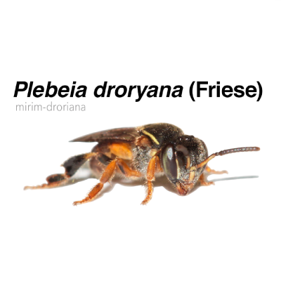
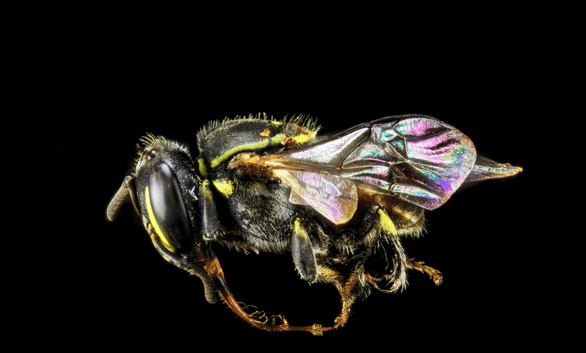

Características Gerais
Comportamento social: Como todas as abelhas sem ferrão, a mirim vive em colônias organizadas, com divisão de trabalho entre rainha,
operárias e machos. As colônias podem ser relativamente pequenas, com algumas centenas de indivíduos.
Ninho: Costumam fazer seus ninhos em cavidades naturais, como ocos de árvores, mas também podem se adaptar a
caixas racionais usadas por meliponicultores. Os ninhos possuem uma estrutura de entrada que as protege de predadores e condições ambientais.
Polinização: ão grandes polinizadoras de plantas nativas, além de culturas agrícolas.
Contribuem de forma significativa para a biodiversidade, pois ajudam na reprodução de espécies vegetais.
produção de mel: Embora produzam mel, a quantidade é menor comparada a espécies
maiores de abelhas sem ferrão. O mel dessas abelhas é bastante valorizado por suas propriedades medicinais e sabor diferenciado.
Ameaças: A destruição de habitats naturais, pesticidas e mudanças climáticas estão entre os maiores riscos que essas abelhas enfrentam. Além disso,
há competição com abelhas exóticas, como a Apis mellifera, que pode impactar suas populações.

Comportamento não agressivo: Uma das principais características da Plebeia droryana é que ela não possui ferrão, o que a torna completamente
inofensiva para os seres humanos. Ao se sentir ameaçada, tende a fugir em vez de atacar.

Importância ecológica: A Plebeia droryana desempenha um papel essencial na polinização, o que é crucial para a
manutenção de ecossistemas equilibrados.
Elas têm um voo mais curto e visitam flores específicas, favorecendo a reprodução de plantas locais.